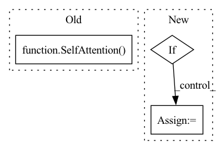

Pattern ID :39357
Before Change
downs.append(ResnetBlock(
pre_channel, channel_mult, time_emb_dim=time_dim))
if use_attn:
downs.append(SelfAttention( channel_mult) )
feat_channels.append(channel_mult)
pre_channel = channel_mult
if not is_last:After Change
ups.append(ResnetBlocWithAttn(
pre_channel+feat_channels.pop(), channel_mult, time_emb_dim=time_dim, dropout=dropout, with_attn=use_attn))
pre_channel = channel_mult
if not is_last:
ups.append(Upsample(pre_channel))
now_res = now_res*2
self.ups = nn.ModuleList(ups)
In pattern: SUPERPATTERN
Frequency: 4
Non-data size: 3
Instances Fragment ID: 111665318
Project Name: janspiry/image-super-resolution-via-iterative-refinement
Commit Name: ec021fdcb317782f6fffb553866d788504e96889
Time: 2021-07-30
Author: lw_jiang@foxmail.com
File Name: model/unet.py
M Class Name: UNet
N Class Name: UNet
M Method Name: __init__(10)
N Method Name: __init__(9)
M Parent Class: nn.Module
N Parent Class: nn.Module
M File Name: model/unet.py
N File Name: model/unet.py
M Start Line: 173
M End Line: 210
N Start Line: 160
N End Line: 217
Before Change
if not receives_context:
continue
context_attn = SelfAttention( dim, depth, max_seq_len, heads, 0, window_size, local_attn_window_size = local_attn_window_size, attn_dropout = attn_dropout, dropout = attn_layer_dropout, kmeans_ema_decay = kmeans_ema_decay, commitment_factor = commitment_factor, receives_context = True, context_window_size = context_window_size)
context_ff = Chunk(ff_chunks, FeedForward(dim, dropout = ff_dropout, glu = ff_glu), along_dim=1)
layers.append(nn.ModuleList([context_attn, context_ff]))
execute_type = ReversibleSequence if reversible else SequentialSequenceAfter Change
get_context_attn = lambda: SelfAttention(dim, depth, max_seq_len, heads, 0, window_size, local_attn_window_size = local_attn_window_size, attn_dropout = attn_dropout, dropout = attn_layer_dropout, kmeans_ema_decay = kmeans_ema_decay, commitment_factor = commitment_factor, receives_context = True, context_window_size = context_window_size)
get_context_ff = lambda: Chunk(ff_chunks, FeedForward(dim, dropout = ff_dropout, glu = ff_glu), along_dim=1)
if weight_tie:
assert len(set(n_local_attn_heads)) == 1, "you can only weight tie if number of local attention heads for all layers is the same"
get_attn, get_ff, get_context_attn, get_context_ff = map(cache_fn, (get_attn, get_ff, get_context_attn, get_context_ff))
for ind, local_heads in zip(range(depth), n_local_attn_heads):
attn = get_attn(local_heads) Fragment ID: 111665317
Project Name: lucidrains/routing-transformer
Commit Name: 899fbf85db9b5f734283552132c7b77265f64d2f
Time: 2020-05-27
Author: lucidrains@gmail.com
File Name: routing_transformer/routing_transformer.py
M Class Name: RoutingTransformer
N Class Name: RoutingTransformer
M Method Name: __init__(21)
N Method Name: __init__(20)
M Parent Class: nn.Module
N Parent Class: nn.Module
M File Name: routing_transformer/routing_transformer.py
N File Name: routing_transformer/routing_transformer.py
M Start Line: 588
M End Line: 599
N Start Line: 591
N End Line: 623
Before Change
downs.append(ResnetBlock(
pre_channel, channel_mult, time_emb_dim=time_dim))
if use_attn:
downs.append(SelfAttention( channel_mult) )
feat_channels.append(channel_mult)
pre_channel = channel_mult
if not is_last:After Change
ups.append(ResnetBlocWithAttn(
pre_channel+feat_channels.pop(), channel_mult, time_emb_dim=time_dim, dropout=dropout, with_attn=use_attn))
pre_channel = channel_mult
if not is_last:
ups.append(Upsample(pre_channel))
now_res = now_res*2
self.ups = nn.ModuleList(ups)
Fragment ID: 111665316
Project Name: janspiry/image-super-resolution-via-iterative-refinement
Commit Name: fc24c7b6bc55aaf8950b4a581247c844f5fe3ba9
Time: 2021-07-30
Author: jiangliangwei@tetras.com
File Name: model/unet.py
M Class Name: UNet
N Class Name: UNet
M Method Name: __init__(10)
N Method Name: __init__(9)
M Parent Class: nn.Module
N Parent Class: nn.Module
M File Name: model/unet.py
N File Name: model/unet.py
M Start Line: 173
M End Line: 210
N Start Line: 160
N End Line: 217
Before Change
self.item_list_embedding = nn.Embedding(self.item_count, self.embedding_size, padding_idx=0)
// define layers and loss
self.gnn = GNN(self.embedding_size, self.step)
self.self_attention = SelfAttention( self.embedding_size, self.hidden_size, self.dropout)
self.criterion = nn.CrossEntropyLoss()
self.reg_loss = EmbLoss()
// parameters initialization
self.apply(self.init_weights)After Change
self.gnn = GNN(self.embedding_size, self.step)
self.self_attention = TransformerEncoder(config)
self.reg_loss = EmbLoss()
if self.loss_type == "BPR":
self.loss_fct = BPRLoss()
elif self.loss_type == "CE":
self.loss_fct = nn.CrossEntropyLoss()
else: Fragment ID: 111665320
Project Name: rucaibox/recbole
Commit Name: 1714ed39db89b102bc46fc23155f92de0d8996bd
Time: 2020-10-15
Author: hui.wang@ruc.edu.cn
File Name: recbox/model/sequential_recommender/gcsan.py
M Class Name: GCSAN
N Class Name: GCSAN
M Method Name: __init__(3)
N Method Name: __init__(3)
M Parent Class: SequentialRecommender
N Parent Class: SequentialRecommender
M File Name: recbox/model/sequential_recommender/gcsan.py
N File Name: recbox/model/sequential_recommender/gcsan.py
M Start Line: 173
M End Line: 195
N Start Line: 100
N End Line: 126